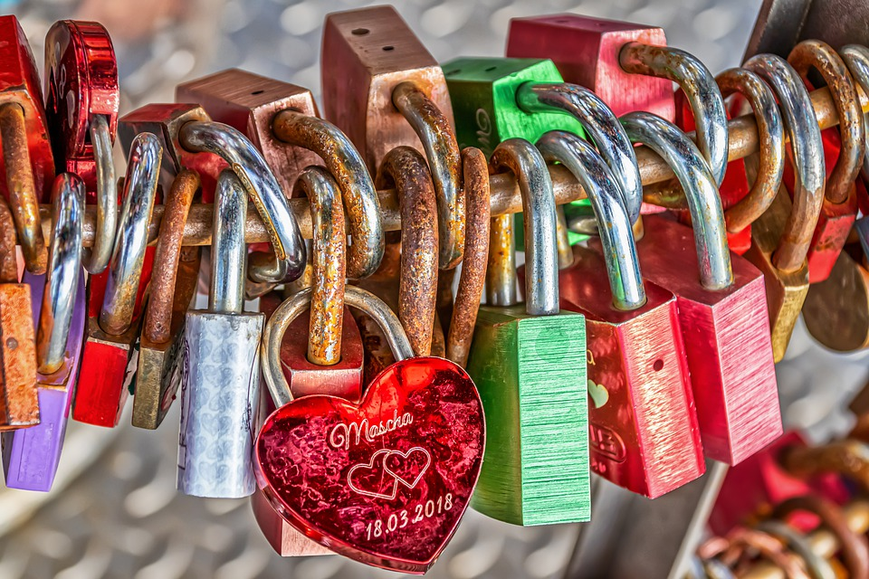

The real definition of loyalty is a strong feeling of support or allegiance.Loyalty isnt something that should be taken for granted. Theres not a lot of people in the world willing to be loyal and that like to lie about dumb things and it all circles back to them not being loyal to you."Loyalty is genuinely having their best interests at heart and ensuring that relationship is reciprocal". Loyalty isnt just about love or romantic relations it has to do with family and friends as well. Loyalty is something everyone should have and try and be. "
Loyalty is one of my values I search for in myself and in people I met. I dislike people who lie and dont tell the truth and sugar coat things. It goes to show how they dont care about the person your trying to improve to be or just agree or disagree with whatever you say to be nice when it reality its just lies being fed to you. Loyalty is important because it deals with trust and commitment and those are things I value. I would like my friend to give the the cold heart truth rather than lie to me to make me happy or for their benifit. Another thing is that you need loyalty when your going through rough patches with people. A lot of people see that for an excuse to do you wrong or give the excuse that you guys were having a rough patch but that wouldnt happen with loyalty and its important for any relationship to work out in the end. This is why I think loyalty is important to have as your values